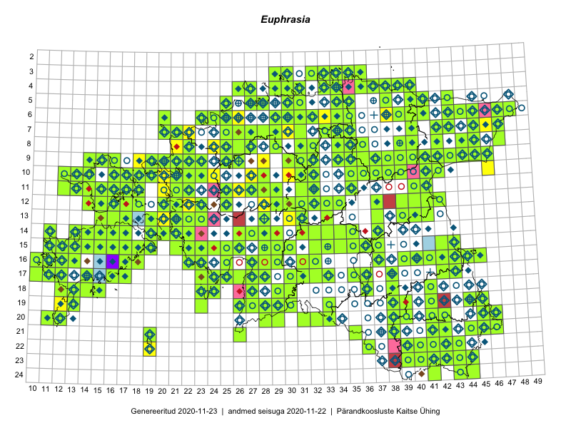

Euphrasia
Uuendatud: 2016-12-01
Kaardile koondatud taksonid: Euphrasia

Kaart põhineb 194 kirjel, neist vaatlusi 132 ja eksemplare 62.
Kuvatud viited 20 esimesele andmebaasikirjele, ülejäänud PlutoFis
- Toomas Kukk, Peedu Saar: 2015-08-05: 20-11: ala
- Toomas Kukk, Eerik Leibak: 2015-08-10: 09-14: ala
- Toomas Kukk, Peedu Saar: 2014-09-25: 07-42: ala
- Toomas Kukk, Peedu Saar: 2014-09-24: 06-41: ala
- Ott Luuk, Toivo Sepp: 2015-07-29: 09-31: ala
- Peedu Saar, Elle Roosaluste: 2015-07-12: 13-20: ala
- Toomas Kukk, Eerik Leibak: 2015-08-11: 09-15: ala
- Toomas Kukk, Eerik Leibak: 2015-08-11: 09-16: ala
- Toomas Kukk, Eerik Leibak: 2015-07-29: 16-45: ala
- Tiit Hallikma, Toomas Kukk: 2015-08-27: 12-21: ala
- Toomas Kukk, Peedu Saar, Mall Värva, Sander Laherand: 2014-07-27: 18-38: ala
- Toomas Kukk, Timo Luhamäe, Kersti Tambets, Sten Mander, Janika Sammasto: 2014-07-30: 20-45: ala
- Toomas Kukk, Peedu Saar: 2014-09-11: 06-43: ala
- Toomas Kukk, Peedu Saar: 2014-09-10: 07-43: ala
- Jana-Maria Habicht, Ester Valdvee: 2015-07-20: 07-34: ala
- Toomas Kukk, Thea Kull: 2014-08-20: 07-29: ala
- Jana-Maria Habicht, Ester Valdvee: 2015-08-15: 07-34: ala
- Jana-Maria Habicht, Ester Valdvee: 2015-07-31: 08-34: ala
- Jana-Maria Habicht, Ester Valdvee, Kirke Pilvik: 2015-07-14: 08-35: ala
- Jana-Maria Habicht, Ester Valdvee, Kirke Pilvik: 2015-07-25: 09-34: ala